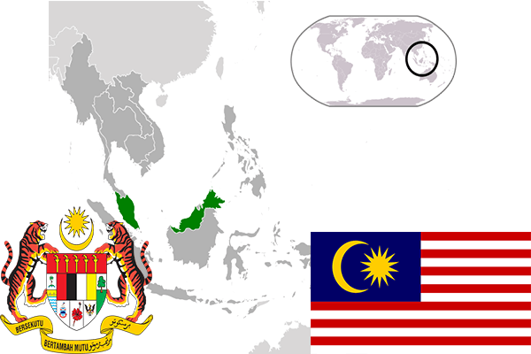

To`liq nomi: Malayziya Federatsiyasi
Region: Janubiy-sharqiy Osiyo
Qonunchilik shakli: Konstitutsion Monarxiya
Maydoni: 329 758 km² (dunyoda 65 -o`rinda )Poytaxt: Kuala-Lumper
Chegaradosh davlatlari: Tailand, Indoneziya, Bruney
Aholisi: 31,796,000 (dunyoda 44 - o`rinda, 2017 -yil roʻyxat)
Aholi zichligi: 92/km²
Aholining o`rtacha yoshi: 72,9 yil (75,7 ayollar, 70,1 erkaklar)
Rasmiy tili: Malayziya tili
Dini: 61,3% islom, 19,8% buddist, 9,2% Xristian, 6,2% Hindu va boshqa
Pul birligi: Malayziya ringgiti
Telefon prefiksi: +60
Internet domen: .my
Xalqaro tashkilotlarga a`zoligi: BMT (1957 – yildan), Osiyo-Tinchokeani Iqtisodiy hamkorligi tashkiloti
Dengiz va okeanlarga chiqishi: Andaman va Janubiy Xitoy dengizlari
YIM: Butun: $ 922,057 mlrd, Jon boshiga $ 27 267 (2016 - yil roʻyxati)
Yirik shaharlari: Kuala-Lumper, Joxor-Baru, Ipox, Kuching